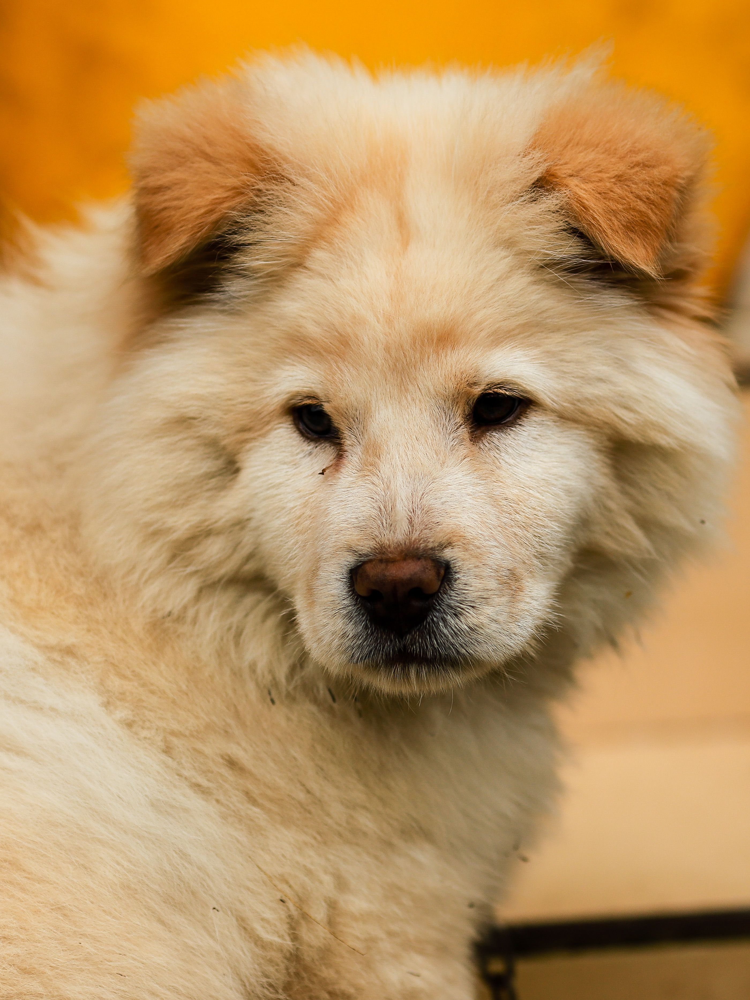
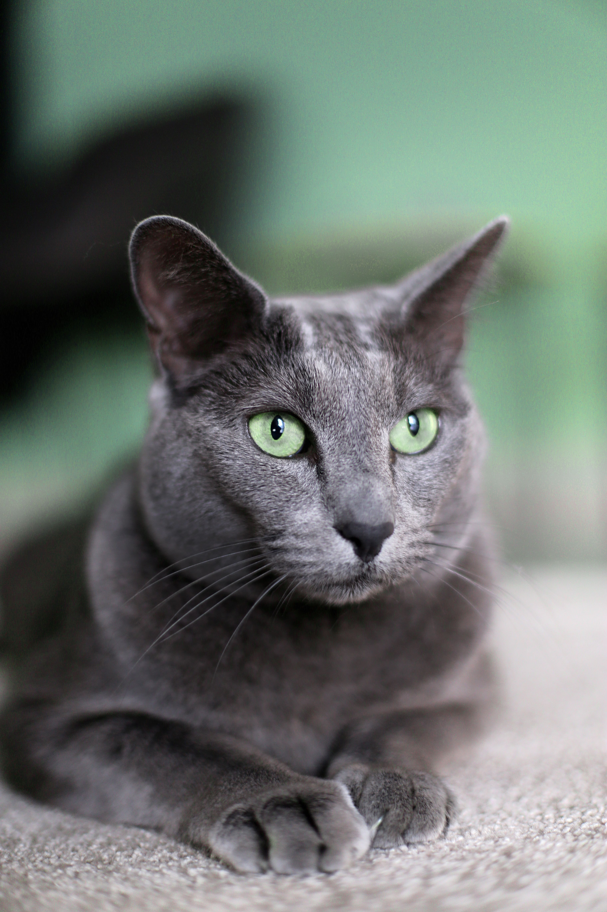
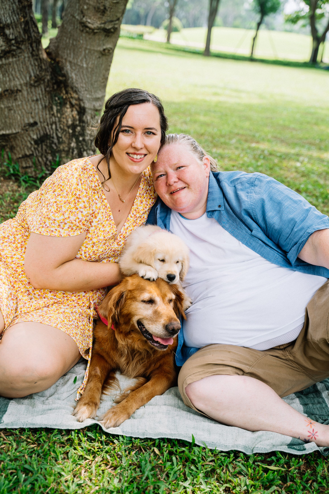
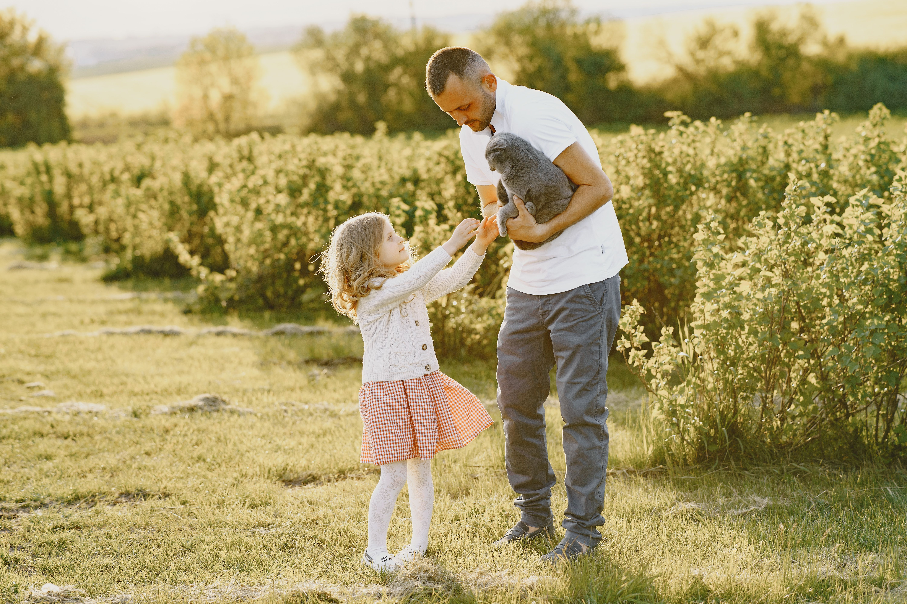
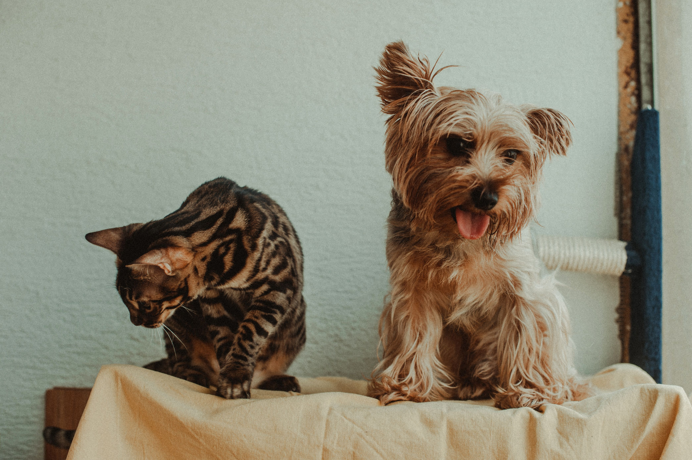
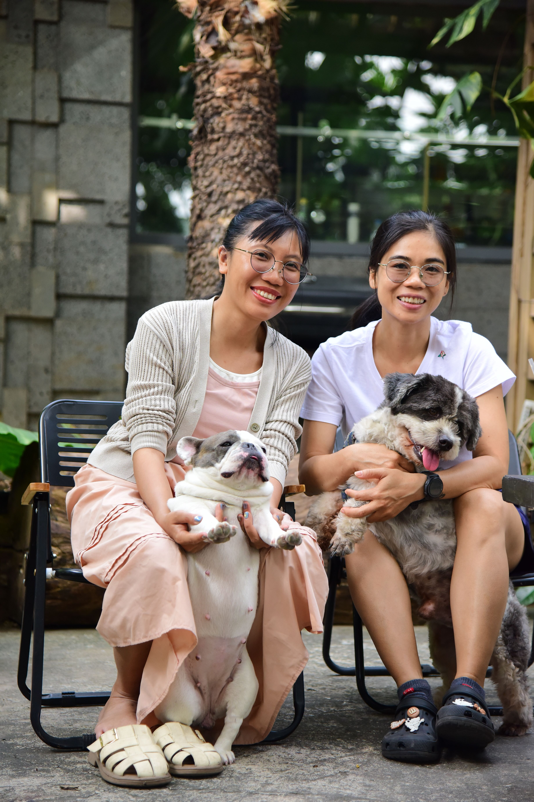
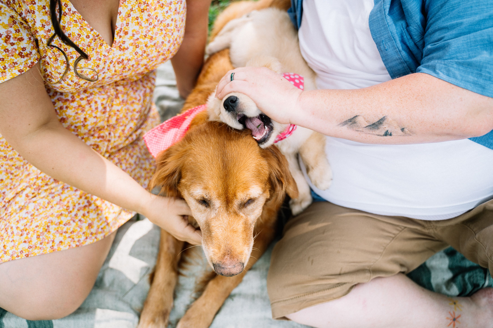
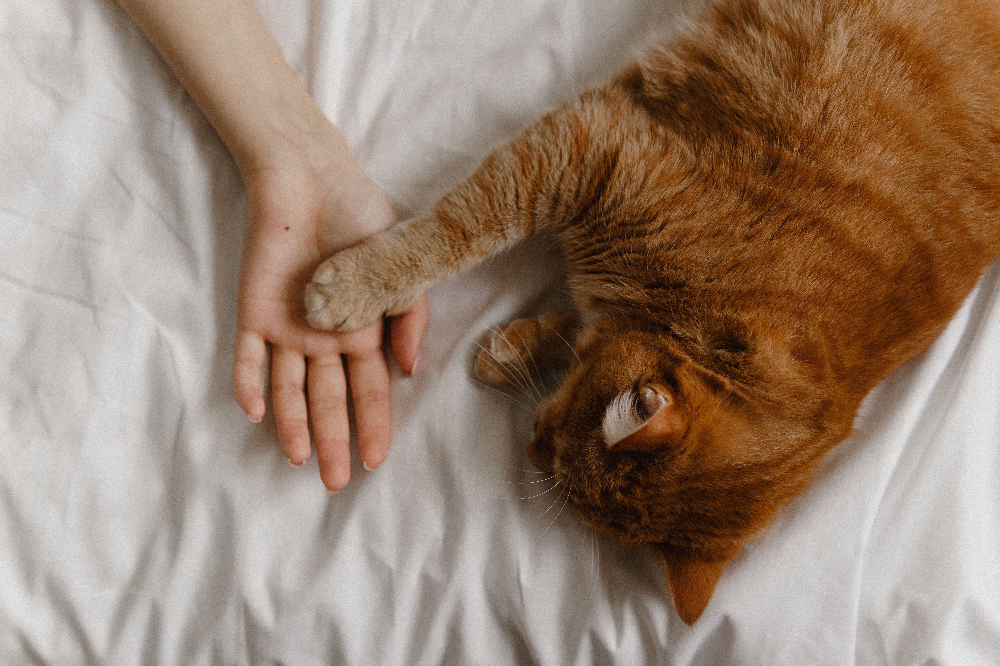

CONOCE Apatitas.
En Patitas creemos que todos los perros y gatos merecen un hogar donde reciban amor y cuidados. Nuestro propósito es conectar a las mascotas con personas que quieran darles una segunda oportunidad, promoviendo una adopción segura y responsable.
CONOCE NUESTRA HISTORIA

UNA NUEVA HISTORIAcomienza aquí.
Adoptar es mucho más que llevar una mascota a casa. Es darle una oportunidad y asumir el compromiso de cuidarla y acompañarla durante toda su vida.

01ENCUENTRA A TU COMPAÑERO
Conoce a los perros y gatos que están buscando un hogar.
INICIA EL PROCESO
Conoce los requisitos y completa tu solicitud de adopción.

03DALE LA BIENVENIDA
Después de completar el proceso, prepárate para recibir a tu nuevo compañero.


HISTORIASque dejan huella.
Cada adopción es el comienzo de una nueva historia. Conoce las experiencias de familias que decidieron abrir las puertas de su hogar a una mascota.
“Llegó asustado y hoy no se despega de nosotros. Fue la mejor decisión del año.”— Familia García
“El proceso fue claro y nos acompañaron en todo momento.”— Familia Gómez
“Mi gata y yo nos encontramos. Ahora la casa tiene ronroneos.”— Familia Gutiérrez